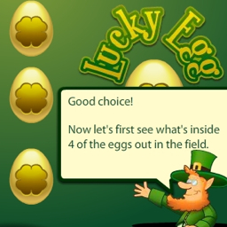
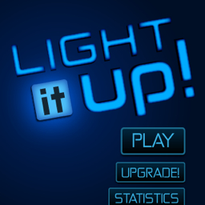

I Am
A Chinese guy,
born in Tianjin and mostly living in Beijing now.
I love Tianjin, the architectures, rivers, food, daily life, human culture. Beijing is also cool, in a different way, with bussinesses, information, vision, passion. I'm currently looking for a balance of the two sides.
A designer,
sensitive to problems in life, visible or hidden, and passionate to solve them.
I enjoy life, all real things in life, food, travel, work, photography, reading, music, all of them. Sometimes there're points that bothers, from where to put my Kindle to a document's readability. People may get annoyed, even angry. I'm usually curious to find out where the issue is and figure out the solution.
A craftman,
having the enthusiasm on making great things.
For things I mean hundreds of kinds of things, chairs, cups, keys, books, phones, bags, applications, websites, all. They have little in common, very little. That little thing is, the feel. When you touch it, use it, interact with it, it's so wonderful that how it embeds in your life is, just the way you need. Therefore, people use it, keep it for years, decades, even generations, they think it's so beautiful, meaningful, that they never throw it away even it's old. They call it antique.
To make such a thing, you need to put your heart in it.
History
MARCH 1987
Born in Tianjin
I was born and raised in a normal and typical Chinese urban family.
My family is not rich, not very poor either. My parents are just, normal people, who have affordable life without too much worry. They didn't try so hard to make a lot of money when they were young. They didn't need to, they didn't want to. They're not gain lovers.
That's why we've been living in a peaceful but small apartment, and why I'm always seeking space, freedom, for the little human kindness planted in my heart. That, is what I fight for, and is what all technologies should serve and guard for, nothing else.
“I've found it is the small everyday deeds of ordinary folk that keep the darkness at bay... small acts of kindness, and love.”
[source]
— Gandalf
SEPTEMBER 2005 to JUNE 2009
BA of Software Engineering
Nankai University
The 4 years of college life was my first chance to go out of home. It was fun to live with school mates in the dorm in the first year, hanging out, getting drunk, talking about stuff beyond reality. But soon I got lost, about the meaning to study and the future, especially when I failed a couple of courses.
It was tough looking for it, the meaning. But I made it, I found I had love deep in my heart doing work to visualize things meaningfully and beautifully, which is my start to design.
Then I moved back home, not only because my home was not far from college, but also I couldn't manage to keep away from the distractions, drinking parties, unrealistic talks, chaos. I had to keep my life simple and structured.
User Interface Design
In the sophomore year we had a course called Digital Media Design, which is generally about visual design with softwares, including interface design, graphics design, and animations etc. The college works reminded me of the joy making cool pictures and web pages back in high school. And suddenly I realized, this was the door, to the region I was going to.
Also I started doing works with Flash, which was such a good tool making rich interactive applications, with its great integration of graphics, animation, and programming platform. While doing this kind of work, I could feel some, meaning, and joy and confidence. And it guided me out of the dilemma I had been in.
Chinese Painting
I took a training on drawing, and another on Chinese painting, to be able to make beautiful work.
The most valuable thing I learned is, big picture vs. details. The way you paint is, you dive into the picture, make the strokes and color; then you step back, observe, and find direction. You do this back and forth.
That's the way you make every product.
Exposure to Buddhism
Everything is nothing. By putting it into practice, I care about myself less and less, and flow with life more and more. While flowing, I try to observe it. I still don't know what it could give me, but I'm curious to see.
Maybe this neotral curiousity is one thing I already got.
“We could be sitting in a monastery somewhere in Japan. We could be out sailing. Some of the [executive team] could be playing golf. They could be running other companies. And we've all chosen to do this with our lives. So it better be damn good. It better be worth it.”
[source]
– Steve Jobs
JULY 2008 to MARCH 2009
Intern Flash Developer
at AOL
I found an intern job in Beijing, thanks to Flash. It was the first time I live in another city alone. I learned a lot by handling things, moving, looking for apartments, settling, being independent.
Also, it was the first time I work in a real company. Work, getting things done, and communication, is what I learned, and they're fundamentally important I think. I'm glad I had a real and good intern job, I grew up with it.
JULY 2009 to JANUARY 2011
Interface Designer
at Exoweb/Happylatte
Happylatte, former Exoweb Labs, I worked there as a designer. We were like a small game studio, focusing on product, doing fast iterations of development, collaborating and making decisions as a team. I love those years, I learned teamwork there, I met a lot of great people there, I will never forget that time.
Lucky Egg

Lucky Egg was a Flash gambling game. It's the first product I did graphics for. My mentor Michael Welch helped me get the character started. Then I continued and finished the whole game, including graphics and animations. It got me warmed up, I'm glad I didn't disappoint myself.
Check the screenshots here for how it looks.
Light it up!

Light it up! was an iPhone puzzle game. It's my favorite project, simply because, you know, it looks cool. And it felt really good, working for this cool vision.
But looking back now, I can see that's far from enough yet as a unique game.
You can check the screenshots here for how it looks.
Oasis
Oasis was a social farming game, launched on Renren and Facebook. I took the lead on design, and did works including but not limit to: information architecture, interface design, graphics, animations, and Flash development.
It's remarkable because we did it in fast iterations, every team member gave a big impact, and we got a lot of feedbacks from users. If we could spend more time on game design it'd be more successful.
Check the screenshots here for how it looks.
JANUARY 2011 to DECEMBER 2012
Technical Artist
at Happylatte
Happylatte finished the switch to a game company and I was moved to an interesting position called Technical Artist since I was the only one who could do both programming and art in the company. I prototyped the job because we didn't know what to do in the beginning, but eventually I figured it out.
I tried hard doing communication work to remove obstacles on art process, and made a lot of tools (Unity/Maya/Perforce plugins) and scripts to help artists conquer technical difficulties.
ScrumMaster
I got trained and certified as ScrumMaster and Scrum Product Owner by ScrumAlliance in 2011. After that, I took the ScrumMaster role in High Noon team for 2 months.
I learned a lot in those days, way lot, about teamwork, product vision and process. And I'm happy to say that I did it and got a lot of experience of organizing.
AvatarStage
One of Tech Artist's responsibilities is pipeline tool development. AvatarStage is such a project.
We had a very complicated avatar system in our game, with highly customizable character costumes and animations. This gave artists such a big difficulty testing their works. I made a Unity scene to help. It simplifies the complexed testing process with just a few clicks on costume list, and provides the possibility of making animation sequence with just drag-n-drop.
Friday Blend
Happylatte gives employees 10% of working time to do things beyond their regular job. Early in 2011 we got it organized as an event, I was in the organizing committee as the lead.
In the event, people organize themselves as teams to make deliverable works, such as game prototypes, tools, designs, and researches. And my work was mostly doing product and project management consulting, to help teams finish their goals better. I kept running the event, until it became a week-long game jam when I left the company.
OCTOBER 2011
Dream Logger
Dream Logger is an iPad blogging app for blogbus.com. I made the app in my spare time. The requirement came from a girl, whom I love. Once she was injured and had to lie in bed and wait for recovery for almost 3 months. At that time, iPad was the best device she could use. Unfortunately blogbus.com, the blog service she uses, doesn't work on iPad, and there's no 3rd-party app supporting it. So I made this.
While making it, I figured out there's writing experience that this app could help engage. So I did some special design with paper texture and letterpress type effects, which got many positive feedbacks from user.
You can check the app page here.
JANUARY 2013 to FEBRUARY 2013
UX Designer
at BreadTrip
BreadTrip is a startup making products based on travel journals. I worked there as a UX designer for one month.
During the short period of time I made 3 changes: the landing page, to play a big role doing promotions; the community relationships and the website structure, which lead the product to social media direction.
2 reasons why I left.
One, I have to work my own idea out, and put a lot of time there, so I probably couldn't do full time job in the short future.
Two, I was and am still seeking for a hardcore startup culture, which is about passion, collaboration, discussion, vision. Work, getting things done, is fundamental, but having the goal understood by everyone and running as a team, can bring much more value than that.
PRESENT
Independent Designer
So I decided to be an independent designer, designing applications/websites/gadgets for life.
We humans are weak, hence we make tools, spread out knowledges/principles/philosophies to achieve things, and be better on the way. I do things that help here. For now, my interests are on productivity and publishing.
At the same time, I'm willing to use my skills to help people on their work. Contact me if you need any help/feedback on design. I'm glad to give input.